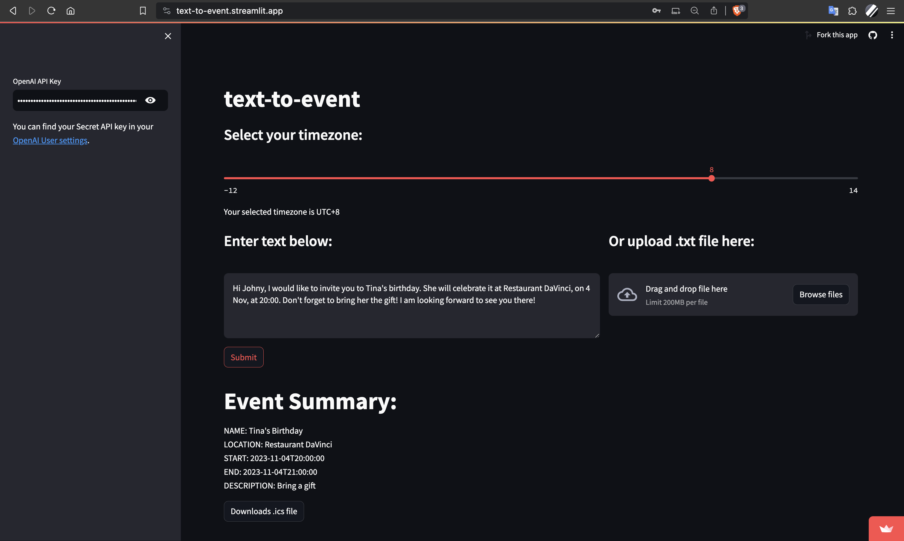

Text-to-Event LLM App
Jun 2023
Length: 1w (at 0.5 FTE)
Programming language: Python (datetime, ics, LangChain, OpenAI, Arrow, Streamlit)
Data: Raw text or a text file containing details about an event
Problem description:
Engineer a web application that reads text and outputs an event in .ics format, using Streamlit,
LangChain, and OpenAI API
Approach & Results:
The application backend was assembled by prompt engineering OpenAI API to extract the details
of an event from text, including its location, description, and starting timestamp. Additionally,
the LLM was instructed to use, by default, the year 2023 and the event duration of one hour
when they were not mentioned. Then, LangChain's prompt template and output
parser were used to format the prompt to incorporate the user's input and output the LLM answer
in a structured way, respectively. Lastly, the result is converted into an ics file after
the timestamp is adjusted based on the timezone and the temporal deictic expressions
included.
For the frontend, Streamlit was used to design the app interface and deploy it in the cloud.
Among the functionalities included in the web app, there are a timezone selection slider, an
alternative to provide the input as a file instead of raw text, and a generated event summary, which
indicates the most important details of the event before downloading and importing the .ics
file in a calendar application.
App accessible at:
https://text-to-event.streamlit.app
(when inactive, the app enters sleep mode, and it takes a couple of minutes to restart)
